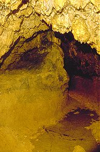

| In English |
| In English |
Schertelshöhle
Touristische Informationen:
 |
| Bild: eine Trofsteinformation trennt den Gang in zwei parallele Gänge. |
| Ort: | A8 Behelfsausfahrt zwischen Ausf Merklingen und Ausf Mühlhausen, in Westerheim am Ortseingang aus Richtung Wiesensteig/Behelfsausfahrt rechts ab (beschildert), 4km NW Westerheim, Parkplatz 200 m vom Eingang. (74,Kd57) |
| Öffnungszeiten: |
Palmsonntag bis 14-MAY Son 9-17. 15-MAY bis 01-OCT täglich 9-17. 02-OCT bis 15-NOV Son 9-17. [2006] |
| Eintrittspreise: |
Erwachsene EUR 2, Kinder EUR 1,50. Gruppe (20+): Erwachsene EUR 1,70, Kinder EUR 1,20. [2006] |
| Typ: |
 Karsthöhle,
Ganghöhle, Klufthöhle, Malm Karsthöhle,
Ganghöhle, Klufthöhle, Malm
|
| Licht: | elektrisch, Niederspannung 42V mit Stromgenerator |
| Dimension: | L=212m. Eingangstrichter: T=24m. 820m N.N. |
| Führungen: | L=320m, D=30min, St=238, V=14.500/a [2005]. |
| Fotografieren: | |
| Zugänglichkeit: | |
| Literatur: |
Willi Baumeister:
75 Jahre Betreuung der Schertelshöhe,
Schwäbischer Albverein, Höhlengruppe Westerheim. Anonymous: Die Schertelshöhle bei Westerheim, (Schwäbische Alb), Walter Höhlenführer Nr. 105 O.F. Geyer (1954): Die Schertelshöhle und das "Steinerne Haus", zwei Albhöhlen SW von Wiesensteig, Jahreshefte des Vereins für vaterländische Naturkunde in Württemberg, Band 109, 53-56. |
| Adresse: |
Höhlenverein e.V., 72589 Westerheim, Tel: +49-7333-7845 Geschäftsführer: Klaus Rauschmaier, Siedlungsstraße 7, 72589 Westerheim, Tel: +49-7333-6406. |
| Nach unserem Wissen sind die Angaben für das in eckigen Klammern angegebene Jahr korrekt. Allerdings können sich Öffnungszeiten und Preise schnell ändern, ohne daß wir benachrichtigt werden. Bitte prüfen Sie bei Bedarf die aktuellen Werte beim Betreiber, zum Beispiel auf der offiziellen Website in der Linkliste. |
|
Geschichte
| 1470 | In der Wiesensteiger Chronik als Schretzenloch erstmals urkundlich erwähnt. |
| 1754 | Erwähnung in der Westerheimer Chronik als Kühloch, in das verendetes Vieh geworfen wird. |
| 1821 | Erste Erforschung der Höhle. |
| 1822 | Bergleute auf der Suche nach Steinkohlevorkommen befahren die Höhle. |
| 1860 | Ein neuer Pächter benutzt die Höhle als Bierkeller. |
| 1900 | Gründung der Ortsgruppe Westerheim des Schwäbischen Albvereins, die sich der Höhle annimmt. |
| 1902 | Ausbau der Wege. Die Höhle wurde von nun an einmal jährlich beleuchtet. |
| 1929 | Amtsnotar Scheuffele aus Wiesensteig und einige Naturfreunde trieben einen 12.5 m langen Stollen in den harten Kalkstein. |
| 1952 | Neugründung der Ortsgruppe des Albvereins, Wiederaufnahme der Betreuung der Höhle. |
| 1953 | Elektrische Beleuchtung. |
| 1955 | Weiterausbau der Höhle. |
Bemerkungen
|  |
| Bild: am Ende des ausgebauten Teils. |
Die Schertelshöhle besteht aus einem L-förmigen Gang, den man am Knick durch einen künstlichen Stollen betritt. Den linken Gang begeht man ganz, beim rechten Gang sind die letzten 50m nicht ausgebaut. Die Höhle fällt vom rechten Ende bis zum linken Ende kontinuierlich, gleichzeitig wird sie immer höher. Das unausgebaute Ende ist sehr niedrig und kann nur kriechend befahren werden, doch folgt man dem Gang von hier, wird er zuerst übermannshoch und verwandelt sich schließlich in eine unterirdische Schlucht.
Etwa in der Mitte des linken Astes befindet sich das Kuhloch, ein Deckeneinsturz in der über 20m hohen Decke. Das Kuhloch ist der natürliche Zugang der Höhle und bereits seit Jahrhunderten bekannt. Doch bei bestimmten Wetterlagen kondensierte die kalte Höhlenluft an der Oberfläche und bildete so Nebelschwaden, so dass die Einheimischen Angst vor der Höhle hatten. Zweige, Laub und Tiere fielen in das Loch, und auch die Menschen warfen verendetes Vieh hinab, deshalb der Name Kuhloch. Die Überreste bildeten einen hohen Haufen aus Knochen und Humus, der beim Ausbau fast vollständig entfernt wurde. Die Praktik Vieh hier zu entsorgen war recht problematisch, da Verwesungsprodukte und Krankheitserreger so in das Karstwasser gelangten und den nahegelegenen Filsursprung, der zur Trinkwasserversorung benutzt wurde, verseuchten.
Die Schertelshöhle ist sehr reich an Tropfsteinen auch wenn vieles davon im Laufe der Zeit zerstört worden ist. Ein kleine Galerie aus Sinterfahnen läßt sich mit einem Nagel zum klingen bringen. Zum Glück wird diese Praktik heute nur noch selten praktiziert, da sie die Zerstörung der Tropfsteine vorantreibt.
 |
| Bild: die Orgel. © Höhlenverein Westerheim. |
Der Name der Höhle kommt von einer Sage über einen Freiherr von Schertel. Dieser war in der Wäldern um Westerheim auf der Jagd. Als sein Hund plötzlich verschwand, mußte er ihn lange suchen. Schließlich hörte er ihn aus einem tiefen Loch im Boden winseln. Nachdem er Leute zur Hilfe geholt hatte ließ er sich hinab und entdeckte dabei die Schertelshöhle. Auch wenn diese Sage nachweislich falsch ist, so wird sie doch immer noch gerne erzählt.
Eine andere Geschichte hört sich viel unglaublicher an, ist aber teilweise belegbar. Um das Jahr 1800 trieb ein Räuberhauptmann im Oberland sein Unwesen, der Schwarzer Vere genannt wurde. Er war als Räuber und Mörder bekannt und soll auch manchmal den Hof seiner Feide abgebrannt haben. Seinen schrecklichen Ruf bekam er wohl vor allem durch die Tatsache, dass er immer dann, wenn man glaubte ihn gefangen zu haben, spurlos verschwand. Eines Tages wurde er natürlich trotzdem gefangen und in Biberach an der Riß in den Ebinger Torturm gesperrt. Dort soll er während eines Gewitters vom Blitz erschlagen worden sein. Mehr als 50 Jahre später erzählte eine alte Frau aus Wiesensteig, die in ihrer Jugend ein Bandenmitglied gewesen war, wohin der Schwarze Vere mit seiner Bande verschwand. Er hatte sich durch das Kuhloch in die Schertelshöhle zurückgezogen.
Doch auch wenn der Räuber wirklich existierte, so spricht doch nichts dafür, dass er tatsächlich jemals bis Westerheim kam. Auch scheint der steile und tiefe Schacht recht ungeeignet um schnell und spurlos darin zu verschwinden, bis eine ganze Räuberbande dort hinabgeklettert ist vergeht doch eine gewisse Zeit. Dennoch birgt die Geschichte eine gewisse innere Logik. Einem Räuber, der soweit aus den Zwängen seiner Zeit ausgebrochen ist, um sich gegen das Gesetz zu stellen, ist auch der Mut zuzutrauen sich in ein Loch hinein zu wagen, in das sich sonst niemand wagen würde.
Ganz in der Nähe (300m/15 min) befindet sich das Steinerne Haus.
 Steinernes Haus
Steinernes Haus Suche auf Google nach "Schertelshöhle"
Suche auf Google nach "Schertelshöhle" Google Earth Placemark
Google Earth Placemark Schertelshöhle und Steinernes Haus
Schertelshöhle und Steinernes Haus{kind=link}